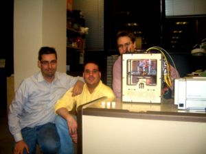

La Cupcake CNC es una "impresora 3D" abierta y de bajo coste, comercializada por la empresa Makerbot Industries. Que sea abierta significa que están disponibles todos los planos de la estructura mecánica, de la electrónica y todo el software que usa es libre.
Es una máquina derivada del proyecto Reprap. El objetivo de la Reprap es ser auto-replicable. Es decir, que la máquina pueda imprimir sus propias piezas. El objetivo de la Cupcake es ser barata, fácil de construir y permitir a cualquier persona imprimir piezas en su casa.